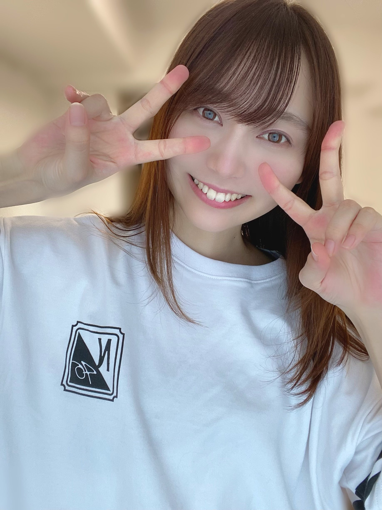
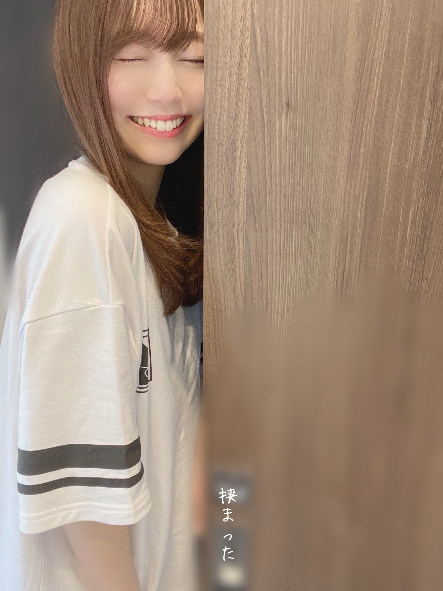

2020/0630Tue多く笑っている！弓木奈於
こんにちは！
ページをクリックしてくださりありがとうございます☺️
乃木坂46 新4期生
京都府出身
弓木奈於（ゆみきなお）です✨

グッズのルームウェア！
とっても着心地が良くて、大好きなんです...( *ˊᵕˋ ) ⁾⁾ ❁
皆さんとお揃いかなっ？
嬉しいですっ˙˚⸜(* ॑ ॑* )⸝˚˙♡
この写真、超早朝に撮ったのです！
明日楽しみだな〜と思ってたらすごく早起きになってしまう日々です。

嬉しすぎて、よくわからないポーズになっていますが
楽しそうなので、おすそわけです(*´˘`*)♡笑
---------- ｷﾘｶｴ ---------
『ノギザカスキッツ』
昨日放送でしたね✨
レイランド様が大好きでお家で声を出して笑ってしまいました！笑
パプニングも笑いに変えてしまう賀喜ちゃん、ボケもツッコミも面白い真佑ちゃん
などなど見所たくさんで書ききれない...！
さらば青春の光さんとの掛け合いがいつも本当に面白くて笑顔をいただいております✨
私達も出演させていただけることが、本当に心の底から有り難くて嬉しいです( ;_; )✨
来週も楽しみで、今からもうワクワクしています！ﾋﾟｮﾝ⋆⸜(* ॑꒳ ॑* )⸝ﾋﾟｮﾝ

ドアに挟まってしまいました。
背景を工夫したら、挟まりました。
レアです( ｰ̀֊ｰ́ )✧
---------- ｷﾘｶｴ ---------
皆さん、いつも本当にコメントありがとうございます( ;_; )！
乃木坂46時間TVの新4期生5人の企画で私が考えさせていただいた
『♯いつもありがとう』
がトレンド入りしてくださっていたとコメントで教えてくださって、本当にありがとうございます！
二度見してしまうほど有り難くて嬉しかったです( ;_; )✨
コメントを読ませていただいていて、皆さん少しずつ新しい生活が始まっていらっしゃると伺いました。
皆さん
「明日も頑張ります！」
「明日も頑張りましょう！」
って書いてくださっていて、本当に皆さん素敵な方ですって思っています(*´˘`*) ❀
皆さん毎日本当にお疲れ様です✨
私も一緒に頑張ります☺️✨
皆様の温かいお言葉にいつも支えていただいています。
改めて
いつもありがとうございます☺️
---------- ｷﾘｶｴ ---------
昨日の「のぎおび」で、
向井葉月さんが、私とよく話すって言ってくださって本当に本当に嬉しかったです( ;_; )✨
皆さんもコメントで教えてくださってありがとうございます₍₍( ´ ᵕ ` *)⁾⁾
実は向井葉月さんは、2番目にお話しした先輩なんです！
乃木坂46 8th YEAR BIRTHDAY LIVEで皆様の前で自己紹介をさせていただくためにメイクをしていただいていた時、
まだ先輩方お一人お一人にしっかりとご挨拶をさせていただけていないのにも関わらず
向井葉月さんが声をかけてくださったんです！
昔から向井葉月さんが大好きで...！
だから心の底から嬉しくて、勇気を出して想いを伝えてみたら
その心を受け止めてくださって、私は何処かへ行ってしまうのでは無いかというほどの幸せをいただきました✨
先日の乃木坂46時間TVでも、
私が『ここは本当にお手洗いなのか...？』と迷っていたら
『ここは本当にお手洗いだよ！！☺️✨』
と弾ける笑顔で教えてくださったり、本当にお優しくて...( ᐪᐤᐪ )
いらっしゃるだけで、ほんわかした空間にしてくださる所や全てに全力で、何をしていてもお綺麗で、心から憧れと尊敬の気持ちでいっぱいです！
『辛い時こそ、笑顔』
私も意識してどんな事があっても笑顔で生きていきたいなって思います✨
---------- ｷﾘｶｴ ---------
マスクをずっとしていたら、鼻の頭が赤くなってしまいました( ᐪᐤᐪ )
家族にも
「トナカイやん」
って言われました
昔から「トナカイやん」って言われがちです( ˙³˙)
トナカイさんじゃないのに( ˙³˙)( ˙³˙)( ˙³˙)

では、明日は黒見ちゃん！
最近、白いワンピースを着ている頻度がとてつもなく多い事がメイクさんや私達の中で話題でして
本人に聞いてみると
なんと同じ服を2着持っているそうなのです！！
楽だからお気に入りだそうです(∩ˊᵕˋ∩)･*
とても似合ってて可愛いんですよ☺️♡
黒見ちゃんはみんなの癒しです☺️✨
最後まで読んでくださりありがとうございました❁
皆さんにとって素敵な1週間になりますように✨
本日もありがとうございました( *ˊᵕˋ ) ⁾⁾ ❁
2020/06/30 13:36
コメント(272)
ブログ更新ありがとう！！！
何回見ても本当に本当に美人で可愛い最強！！！
またの更新楽しみにしてます！
何回見ても本当に本当に美人で可愛い最強！！！
またの更新楽しみにしてます！
ブログ更新ありがとう！
ノギザカスキッツ見たいけど、自分の住んでるところはまだOAしてないんだー。・゜・(ノД`)・゜・。
OAされたら、楽しく見させてもらいますね！
次回の更新も楽しみに待ってますね！
ノギザカスキッツ見たいけど、自分の住んでるところはまだOAしてないんだー。・゜・(ノД`)・゜・。
OAされたら、楽しく見させてもらいますね！
次回の更新も楽しみに待ってますね！
ありがありがとう！！
なおちゃんブログ更新ありがとう！！
乃木坂スキッツでなおちゃんを観れる日を楽しみ待ってます
これからも応援してるよー
乃木坂スキッツでなおちゃんを観れる日を楽しみ待ってます
これからも応援してるよー
ノキザカスキッツ、楽しみ！
ブログ更新ありがとう！
ノギザカスキッツ見たいけど、自分の住んでるところはまだOAしてないんだー。・゜・(ノД`)・゜・。
OAされたら、楽しく見させてもらいますね！
次回の更新も楽しみに待ってますね！
ノギザカスキッツ見たいけど、自分の住んでるところはまだOAしてないんだー。・゜・(ノД`)・゜・。
OAされたら、楽しく見させてもらいますね！
次回の更新も楽しみに待ってますね！
ブログ更新ありがとう！
なんか今日の写真はいつにも増して俺好みばっかりで昇天してしまった！
暑くなってきたしマスクほんと大変だよね、、、
鼻が赤くなったりは(たぶん)ないけど眼鏡してるのもあって耳がかなり重くて疲れる俺です、、、
あ！これ友だちに教えてもらって最近外出るときやってるんだけどシャツとかに使うような清涼スプレーをマスクに1.2回吹きかけると口元めっちゃ涼しくなるからおすすめ！
じゃ、また次の更新待ってます！
なんか今日の写真はいつにも増して俺好みばっかりで昇天してしまった！
暑くなってきたしマスクほんと大変だよね、、、
鼻が赤くなったりは(たぶん)ないけど眼鏡してるのもあって耳がかなり重くて疲れる俺です、、、
あ！これ友だちに教えてもらって最近外出るときやってるんだけどシャツとかに使うような清涼スプレーをマスクに1.2回吹きかけると口元めっちゃ涼しくなるからおすすめ！
じゃ、また次の更新待ってます！
ブログ更新ありがとう。レイランド面白そう。またバッチリコメ残すね。ナオッチ
かわいい！
弓木ちゃん、ブログ更新ありがとう！
ルームウェアお似合いですね！
ノギザカスキッツお疲れ様でした
まだ見れてないので早急に確認しますね
黒見ちゃんのエピソード可愛いですね
トナカイとのコラボも待ってます笑
#いつもありがとう
またの更新楽しみにしていますね
ルームウェアお似合いですね！
ノギザカスキッツお疲れ様でした
まだ見れてないので早急に確認しますね
黒見ちゃんのエピソード可愛いですね
トナカイとのコラボも待ってます笑
#いつもありがとう
またの更新楽しみにしていますね
なおちゃん今日も可愛い！コロナ終わったら握手会絶対行きたいなぁ〜お身体に気をつけてね！笑顔最強！
ブログの更新ありがとう☺︎
今日も相変わらず可愛いですな〜
早起き=楽しみ
これ分かります！！（笑）
〈質問です〉
◎好きな時間帯は何時頃ですか？
答えてくれたら嬉しいです！！
今後のブログも楽しみに待ってます！
体調には気をつけてね！
応援してます！
大好きです♡
鼻が赤くなっちゃうんだ〜
トナカイじゃなかったらドラえもん？（笑）
今日も相変わらず可愛いですな〜
早起き=楽しみ
これ分かります！！（笑）
〈質問です〉
◎好きな時間帯は何時頃ですか？
答えてくれたら嬉しいです！！
今後のブログも楽しみに待ってます！
体調には気をつけてね！
応援してます！
大好きです♡
鼻が赤くなっちゃうんだ〜
トナカイじゃなかったらドラえもん？（笑）
がんばれ！
ブログ更新ありがとうございます！
今回もとても可愛かったです！
次の更新も楽しみにしてます！
明日も頑張ってください笑
今回もとても可愛かったです！
次の更新も楽しみにしてます！
明日も頑張ってください笑
いつも癒されてます！ありがとう！
弓木ちゃんブログ更新ありがとうございます。
46時間TVお疲れ様でした！
沢山、先輩の人達に、色々な、アドバイスもらった見たいですね？弓木ちゃん良かったですね！アドバイスもらえる先輩は、頼もしいですよ！
乃木坂メンバー全員は、一つの大家族ですよ！
弓木ちゃん先輩達の良い教えを、自分なりに、アレンジして、新しく自分の仕事、得意な事として、身に付けて下さいね！弓木ちゃん！同じ京都仲間の私ですので、此れからも、弓木ちゃん間違いなく最後まで応援して行きますよ❗
弓木ちゃん宜しくお願いします。
弓木ちゃん質問です。
もし、大好きな、先輩と、夕食の誘いがあり、何食べたいと聞かれたら、何を、おねだりしますか？
弓木ちゃん！次回の、ブログ更新楽しみにしてます❗
弓木ちゃん乃木坂のインナー服めっちゃ似合う❗可愛い❤️
宜しくお願いしますね❤️
めっちゃかわいい！！
奈於ちゃんブログありがとう(^-^)
奈於ちゃんがノギザカスキッツに出るのが今から楽しみだなぁ。奈於ちゃんの全力コントは絶対に面白いね
１番最初のWピースの画像が可愛すぎて、ブログを読もうと思っても最初から全然進めなかった(笑)
先輩からの言葉って嬉しいよね。きっと奈於ちゃんにも後輩が出来る時が来るから、その時は後輩ちゃんに優しい言葉を掛けてあげてね！
また次のブログを今から楽しみにしてます(*'▽'*)
奈於ちゃんがノギザカスキッツに出るのが今から楽しみだなぁ。奈於ちゃんの全力コントは絶対に面白いね
１番最初のWピースの画像が可愛すぎて、ブログを読もうと思っても最初から全然進めなかった(笑)
先輩からの言葉って嬉しいよね。きっと奈於ちゃんにも後輩が出来る時が来るから、その時は後輩ちゃんに優しい言葉を掛けてあげてね！
また次のブログを今から楽しみにしてます(*'▽'*)
今日もめためたかわいいね…
ゆみっきーブログ更新ありがとう！
今日も雨ですが弓木ちゃんは雨好きですか？僕はどちらかって言うとあまり好きじゃないのです。昔怪我したとこが痛いことが多々あるからです笑
明日もお互い頑張ろうね！応援しています！
今日も雨ですが弓木ちゃんは雨好きですか？僕はどちらかって言うとあまり好きじゃないのです。昔怪我したとこが痛いことが多々あるからです笑
明日もお互い頑張ろうね！応援しています！
かわいい❤️
ブログ更新ありがとうございます！
ルームウェア可愛い……
これは買っておそろにしないとですね
辛い時こそ笑顔！
明日からも頑張りましょ！！！
ではでは。
ルームウェア可愛い……
これは買っておそろにしないとですね
辛い時こそ笑顔！
明日からも頑張りましょ！！！
ではでは。
無理だ、何だこの可愛さは。
史上最強ではないか。止まらない僕の衝動(それ3期曲)
ガチじゃん、マジで声出たうっわ！！！！！！！！！
可愛すぎる好きです。
早く握手会が再開して、なおちゃんとお会いしたいです。
何話せばいいですか。？Ahーーーーーー
史上最強ではないか。止まらない僕の衝動(それ3期曲)
ガチじゃん、マジで声出たうっわ！！！！！！！！！
可愛すぎる好きです。
早く握手会が再開して、なおちゃんとお会いしたいです。
何話せばいいですか。？Ahーーーーーー
奈於ちゃんブログ更新ありがとう♡♡♡
ドアに挟まっちゃった奈於ちゃんとてつもなく可愛くて保護したくなりました(´･_･`)♡♡♡(笑)
辛い時こそ、笑顔がいちばん大事だよね！！！
どんな時でも笑顔を忘れずに毎日を過ごしていきましょう（；_；）
弓木奈於ちゃんにも早く会いたいし、コロナはやく収まるといいなあって毎日のように思ってます( ⸝⸝•ᴗ•⸝⸝ )
奈於ちゃんのこれからの乃木坂の活動がより楽しくなるように祈っています♡♡♡
弓木奈於ちゃんだいすき！！！これから暑くなる時期なので体調は気をつけてくださいね☺︎︎︎︎
またコメントします( ⁎ᵕᴗᵕ⁎ )♡
最後に質問です！！！！！
弓木奈於ちゃんは過去に乃木坂の握手会には参戦したことはありますか？？？またある場合メンバーの名前もよろしくお願いします！！！！
♡あみ♡
ドアに挟まっちゃった奈於ちゃんとてつもなく可愛くて保護したくなりました(´･_･`)♡♡♡(笑)
辛い時こそ、笑顔がいちばん大事だよね！！！
どんな時でも笑顔を忘れずに毎日を過ごしていきましょう（；_；）
弓木奈於ちゃんにも早く会いたいし、コロナはやく収まるといいなあって毎日のように思ってます( ⸝⸝•ᴗ•⸝⸝ )
奈於ちゃんのこれからの乃木坂の活動がより楽しくなるように祈っています♡♡♡
弓木奈於ちゃんだいすき！！！これから暑くなる時期なので体調は気をつけてくださいね☺︎︎︎︎
またコメントします( ⁎ᵕᴗᵕ⁎ )♡
最後に質問です！！！！！
弓木奈於ちゃんは過去に乃木坂の握手会には参戦したことはありますか？？？またある場合メンバーの名前もよろしくお願いします！！！！
♡あみ♡
ゆみっきーブログ更新ありがとう！
最近はいつまで経っても起きれない日々が続いております笑
ついに学校も始まってしまい、こちらは早くもテスト週間でございます
最近は5日に一回の更新が待ち遠しくて待ち遠しくて仕方ないです
憂鬱なテスト週間ではありますが明日からも頑張ります！
次回も楽しみに待ってます！
#いつもありがとう ！！
最近はいつまで経っても起きれない日々が続いております笑
ついに学校も始まってしまい、こちらは早くもテスト週間でございます
最近は5日に一回の更新が待ち遠しくて待ち遠しくて仕方ないです
憂鬱なテスト週間ではありますが明日からも頑張ります！
次回も楽しみに待ってます！
#いつもありがとう ！！
ブログ更新ありがとう！
写真可愛すぎます！
握手会が再開されたら絶対に会いに行きます
写真可愛すぎます！
握手会が再開されたら絶対に会いに行きます
46時間TVお疲れ様でした！
とても初々しくて面白かったです！
ノギザカスキッツで新4期生が披露するコントを楽しみにしてます！
とても初々しくて面白かったです！
ノギザカスキッツで新4期生が披露するコントを楽しみにしてます！
弓木ちゃん！ブログ更新ありがとう！
画像がたくさんで可愛い〜嬉しい( ˘͈ ᵕ ˘͈ )
葉月が良い先輩…！
なかなか感慨深い！笑
お手洗いの流れはちょっと理解し難いけど…( ˘~˘ )？笑
本当にお手洗いか普通疑いますか？！笑
弓木ちゃんほんとに抜けてるところたくさんあって面白い！！笑
まだまだ1週間も終わらないね〜
このブログを糧に明日からも頑張るね（ ; ; ）
明日からテストだよ〜嫌だ〜（ ; ; ）
ななこより
画像がたくさんで可愛い〜嬉しい( ˘͈ ᵕ ˘͈ )
葉月が良い先輩…！
なかなか感慨深い！笑
お手洗いの流れはちょっと理解し難いけど…( ˘~˘ )？笑
本当にお手洗いか普通疑いますか？！笑
弓木ちゃんほんとに抜けてるところたくさんあって面白い！！笑
まだまだ1週間も終わらないね〜
このブログを糧に明日からも頑張るね（ ; ; ）
明日からテストだよ〜嫌だ〜（ ; ; ）
ななこより
なお！
やっほー！
ひろき(Yandji)です☺️
ブログ更新ありがとー！！！
質問タイムー！！！
今一番ハマってる動画って何？
また、コメントするね！
では、またねー！
ひろき(Yandji)より
奈於ちゃんこんばんは☺️
可愛い写真ありがとう♪
ほっこり
鼻赤いのにも癒されたよ(〃^ー^〃)
明日も１日HAPPYを
可愛い写真ありがとう♪
ほっこり
鼻赤いのにも癒されたよ(〃^ー^〃)
明日も１日HAPPYを
奈於ちゃんブログ更新ありがとう！
ルームウェア僕も買ったよ！大きめが好きなのでXL買いました笑
おそろおそろ\ ♪♪ /
僕次の日楽しみでも朝は起きれない派です笑
握手会の日起こしてください笑
ちょー聞いて、昨日なノギスキ見よ思って課題しながら起きてたんよ。そしたらさ集中しすぎて気づいたらノギスキ終わった時間やってん
見逃し配信とかあったっけ？あったら見ます笑
葉月ののぎおび見てたよ笑
奈於ちゃんの話出てきた時、おっ！ってなった笑
いろんなメンバーと仲良くしてるの嬉しいな
またいろんなエピソード教えてください！
奈於ちゃんがトナカイだったら僕はサンタさんになります
重いけど頑張って引っ張ってね笑
またブログ更新楽しみにしてます！
(=ﾟωﾟ)ﾉﾎﾅ､ﾏﾀ!!
ルームウェア僕も買ったよ！大きめが好きなのでXL買いました笑
おそろおそろ\ ♪♪ /
僕次の日楽しみでも朝は起きれない派です笑
握手会の日起こしてください笑
ちょー聞いて、昨日なノギスキ見よ思って課題しながら起きてたんよ。そしたらさ集中しすぎて気づいたらノギスキ終わった時間やってん
見逃し配信とかあったっけ？あったら見ます笑
葉月ののぎおび見てたよ笑
奈於ちゃんの話出てきた時、おっ！ってなった笑
いろんなメンバーと仲良くしてるの嬉しいな
またいろんなエピソード教えてください！
奈於ちゃんがトナカイだったら僕はサンタさんになります
重いけど頑張って引っ張ってね笑
またブログ更新楽しみにしてます！
(=ﾟωﾟ)ﾉﾎﾅ､ﾏﾀ!!
弓木ちゃん好きです。
笑顔が素敵です！！
ブログ更新ありがとう！！
6月ももう終わりだね、、
マスクで鼻赤くなっちゃうのも大変だけど、熱中症も気をつけてね！！
奈於ちゃんがブログ更新してくれたからまた課題頑張るね！！ありがとう！！
今日も奈於ちゃんの存在に感謝してますありがとう
6月ももう終わりだね、、
マスクで鼻赤くなっちゃうのも大変だけど、熱中症も気をつけてね！！
奈於ちゃんがブログ更新してくれたからまた課題頑張るね！！ありがとう！！
今日も奈於ちゃんの存在に感謝してますありがとう
ファンからは何て呼ばれたいのかな
ゆみっきーかな
ゆみっきーかな
更新ありがとう！
ほんとかわいい
大好きです
ほんとかわいい
大好きです
ルームウェア似合ってるー！
自撮りめちゃくちゃ可愛いです！
こうやって言葉にして色んな人やコメントに対しての思いを伝えてくれて、またそれを読んでこっちも思いを伝えて、っていうやりとりをするのがすごく素敵だと思うし頑張れます。
ほんの少しでも、自分のコメントで元気になってくれれば！と心から思っています！
まだまだ自分は自粛期間と同じような生活ですが、ブログと、会える時を楽しみに頑張っていこうと思います〜
体調気をつけて頑張ってね！
今日のオススメの1曲
BiSH / MORE THAN LiKE
自撮りめちゃくちゃ可愛いです！
こうやって言葉にして色んな人やコメントに対しての思いを伝えてくれて、またそれを読んでこっちも思いを伝えて、っていうやりとりをするのがすごく素敵だと思うし頑張れます。
ほんの少しでも、自分のコメントで元気になってくれれば！と心から思っています！
まだまだ自分は自粛期間と同じような生活ですが、ブログと、会える時を楽しみに頑張っていこうと思います〜
体調気をつけて頑張ってね！
今日のオススメの1曲
BiSH / MORE THAN LiKE
弓木ちゃんブログ更新ありがとう！
いつ写真みても安定の可愛さの弓木ちゃん！強いんじゃ！笑
ルームウェア自分も買いました!!弓木ちゃんとお揃いだぁぁ笑
ノギザカスキッツ面白いよね！！早く弓木ちゃん含め新4期生の子達のも見てみたい！！
葉月めっちゃ優しいね！
真っ赤なお鼻の弓木ちゃん把握しました✍✍笑
弓木ちゃんにとって良い1週間になりますように！！
暑い日続くけど体調とかには気を付けてね！！
ゴードンでした！！
いつ写真みても安定の可愛さの弓木ちゃん！強いんじゃ！笑
ルームウェア自分も買いました!!弓木ちゃんとお揃いだぁぁ笑
ノギザカスキッツ面白いよね！！早く弓木ちゃん含め新4期生の子達のも見てみたい！！
葉月めっちゃ優しいね！
真っ赤なお鼻の弓木ちゃん把握しました✍✍笑
弓木ちゃんにとって良い1週間になりますように！！
暑い日続くけど体調とかには気を付けてね！！
ゴードンでした！！
ゆみっきー＼(^o^)／お疲れさまでした
ルームウェア姿可愛いなあ(*´ω｀*)♡
髪の毛と遊んでる楽しそうなゆみっきー可愛いなあ＼(^o^)／♡
ノギザカスキッツは本当に面白かったよね＼(^o^)／
新4期生の出番はまだかな～？((o(´∀｀)o))ﾜｸﾜｸ
ドアに挟まったってどんな状況？（笑）でも可愛いから良いよ(*´ω｀*)♡
もっと積極的に葉月ちゃんと喋るように＼(^o^)／
葉月ちゃんは本当に喋りやすい優しい先輩だから、きっと向こうからもウエルカムだ＼(^o^)／
「辛い時こそ笑顔」は本当だ！私も真似しなきゃ(｡>﹏<｡)
えー、トナカイゆみっきーの写真はないの？(*´ω｀*)♡♡（笑）
黒見のワンピースイメージは確かに強いよ。黒と明るい色は強いよ。でも何でも可愛いよね＼(^o^)／
これからも頑張って(/･ω･)/
ルームウェア姿可愛いなあ(*´ω｀*)♡
髪の毛と遊んでる楽しそうなゆみっきー可愛いなあ＼(^o^)／♡
ノギザカスキッツは本当に面白かったよね＼(^o^)／
新4期生の出番はまだかな～？((o(´∀｀)o))ﾜｸﾜｸ
ドアに挟まったってどんな状況？（笑）でも可愛いから良いよ(*´ω｀*)♡
もっと積極的に葉月ちゃんと喋るように＼(^o^)／
葉月ちゃんは本当に喋りやすい優しい先輩だから、きっと向こうからもウエルカムだ＼(^o^)／
「辛い時こそ笑顔」は本当だ！私も真似しなきゃ(｡>﹏<｡)
えー、トナカイゆみっきーの写真はないの？(*´ω｀*)♡♡（笑）
黒見のワンピースイメージは確かに強いよ。黒と明るい色は強いよ。でも何でも可愛いよね＼(^o^)／
これからも頑張って(/･ω･)/
なお！
ひろき(Yandji)です☺️
グッズのTシャツかわいいよね！！！
グッズたくさん欲しいけど、バイトできないのがつらいわ
バイト再開したら、グッズ買おうと心に決めてるんや☺️
ノギザカスキッツ見たい！
おれの住んでるとこ、放送してないんよなぁ、、、
YouTubeとかで見たりするけど、全部はなかなか無いからなぁ
はやく、ブルーレイとか発売してほしいわ☺️
マスクって、暑いよな
暑いし、肌荒れるけど、しなきゃやもんね！
おれ、今肌荒れしてしまったから、治すのに奮闘中や！
今日は雨でじめじめしてるから、テンション上がらへんなぁ、、
はやく、晴れて、外に遊び行きたい！！！
暑かったり、じめじめしたり、体調崩しやすいで、気をつけてなぁ☺️
では、またねー
ひろき(Yandji)より
こんにちは！
葉月ちゃんとのエピソード、とても素敵ですね…(T_T)
研修生ライブで虜になり、46時間TVでさらに弓木ちゃんの良さを感じられたので、これからの活躍も楽しみにしてます！！
葉月ちゃんとのエピソード、とても素敵ですね…(T_T)
研修生ライブで虜になり、46時間TVでさらに弓木ちゃんの良さを感じられたので、これからの活躍も楽しみにしてます！！
こんにちは！
以前まあやがなおちゃんと一緒のクラスだったって言ってたの聞いたのですが、何かエピソードとかありますか？
あったら是非聞きたいです！
以前まあやがなおちゃんと一緒のクラスだったって言ってたの聞いたのですが、何かエピソードとかありますか？
あったら是非聞きたいです！
なお！
ひろき(Yandji)です☺️
今回もブログ更新ありがとうね！
最近は時間があっという間にすぎるで、5日間がめちゃ早く感じるわ！
毎回ブログ楽しみにしてるで、5日後もよろしくなぁ☺️
はやく、モバメも始まって欲しいわ！
あと、ライブと握手会にも行きたい☺️
暑い日は、ちゃんと水分いっぱい飲むんやで☺️
1日2リットルくらい！
では、またねー
ひろき(Yandji)より
ブログ更新お疲れ様です。本日も笑顔でありがとう。ノギザカスキッツで奈於さん見れる日を楽しみにしてますよ。体調きおつけてくださいね。
初めてコメントします
46時間TV、リアルタイムで観終えた後、AbemaTVのアーカイブ放送を再度見直していたのですが…
そこで弓木ちゃんの新4期企画での頑張りや、最後のSP LIVEでの涙に心を打たれまして…
気が付いたら推しメンタオルを購入しておりました 笑
笑
オーディションの時からずっと応援してました…と言うわけではないので、前からのファンの方達には敵わないと思いますが、
これから弓木ちゃんを応援させて頂きます
これから宜しくお願いします！^_^
46時間TV、リアルタイムで観終えた後、AbemaTVのアーカイブ放送を再度見直していたのですが…
そこで弓木ちゃんの新4期企画での頑張りや、最後のSP LIVEでの涙に心を打たれまして…
気が付いたら推しメンタオルを購入しておりました
オーディションの時からずっと応援してました…と言うわけではないので、前からのファンの方達には敵わないと思いますが、
これから弓木ちゃんを応援させて頂きます
これから宜しくお願いします！^_^
ブログ更新ありがとう
早く乃木坂スキッツでなおちゃん見たいなー
楽しみにしてる！
握手会で会えるようになるのが待ち遠しいです。
明日も頑張っていこう！
早く乃木坂スキッツでなおちゃん見たいなー
楽しみにしてる！
握手会で会えるようになるのが待ち遠しいです。
明日も頑張っていこう！
こんにちは奈於〰️
自分も赤鼻とか言われるよ
夏は鼻だげ赤くなるし、冬も寒さで赤くなるしどうしたら良いかな って質問しちゃダメだよね
って質問しちゃダメだよね
46時間TVで見た奈於は
新４期生を優しく包むお姉さんだったよ

奈於のそんなところが大好きだよ。
早く握手会やらないかな〰️
７月の個握も延期になっちゃって、今年はもう皆に会えないのかな
会いたくて仕方がありません
やっと収録もソーシャルディスタンスをとりながら始まったし、徐々にもとに戻りつつあるんだよね
第２波が来そうだけど奈於は体調に気を付けてね
それではこの辺で
かっきーと同郷の マサシ⊿
毎日トラックの運転してます
奈於も頑張ってね
自分も赤鼻とか言われるよ
夏は鼻だげ赤くなるし、冬も寒さで赤くなるしどうしたら良いかな
46時間TVで見た奈於は
新４期生を優しく包むお姉さんだったよ
奈於のそんなところが大好きだよ。
早く握手会やらないかな〰️
７月の個握も延期になっちゃって、今年はもう皆に会えないのかな
会いたくて仕方がありません
やっと収録もソーシャルディスタンスをとりながら始まったし、徐々にもとに戻りつつあるんだよね
第２波が来そうだけど奈於は体調に気を付けてね
それではこの辺で
かっきーと同郷の マサシ⊿
毎日トラックの運転してます
奈於も頑張ってね
ブログ更新ありがとうー笑
ノギザカスキッツ奈於ちゃんが出てくるの待ってるねぇーー
ノギザカスキッツ奈於ちゃんが出てくるの待ってるねぇーー
ゆみっきー、更新ありがとう！
ノギザカスキッツ、めちゃめちゃ面白くて毎週最高！
かっきー、あんなキレイなコケ方あるん？！って感じだったね！
もってるねー！( ´∀｀ )
新４期のみんなの出番も待っているよ～
葉月さんと仲よしさんなんだね！
同じ99年生まれで、ゆみっきーの方が学年はひとつ上かな？？
どんどん仲よくして、他の３期生とも距離縮めてくださいねー
ゆみっきーのちょっと明るめの髪色がとってもきれいで好きです！
ゆみっきー美白だから似合います！
#いつもありがとう
これはファンの自分達こそ言いたい言葉^^
今はブログと画面越しだけだけど、応援できることが楽しいし、本当に元気をもらっているよー
また来ます！
しもっち
ノギザカスキッツ、めちゃめちゃ面白くて毎週最高！
かっきー、あんなキレイなコケ方あるん？！って感じだったね！
もってるねー！( ´∀｀ )
新４期のみんなの出番も待っているよ～
葉月さんと仲よしさんなんだね！
同じ99年生まれで、ゆみっきーの方が学年はひとつ上かな？？
どんどん仲よくして、他の３期生とも距離縮めてくださいねー
ゆみっきーのちょっと明るめの髪色がとってもきれいで好きです！
ゆみっきー美白だから似合います！
#いつもありがとう
これはファンの自分達こそ言いたい言葉^^
今はブログと画面越しだけだけど、応援できることが楽しいし、本当に元気をもらっているよー
また来ます！
しもっち
コメントする

PROFILE
新4期生リレー
202104
| SUN | MON | TUE | WED | THU | FRI | SAT |
|---|---|---|---|---|---|---|
| 1 | 2 | 3 | ||||
| 4 | 5 | 6 | 7 | 8 | 9 | 10 |
| 11 | 12 | 13 | 14 | 15 | 16 | 17 |
| 18 | 19 | 20 | 21 | 22 | 23 | 24 |
| 25 | 26 | 27 | 28 | 29 | 30 | |

13回目のブログ更新ありがとう！
6月は毎年あまり好きじゃないんよね。
雨ばっか降るもん。
今日なんて6月ラストなのに最近じゃ1番の大雨やんか〜笑
洗濯物も干せんし、雨って何かとやる気を削いで来るよなぁ。
今はこんなつまらん話しか出来へんな(٭°̧̧̧ω°̧̧̧٭)
ごめんね！握手会とかがあれば話すことたくさんあるんやけどな！笑
こんなに会えない日々が続いてくと思うと中々メンタルやられるね〜…
まあ、それでも頑張って生きて行かなアカンか！
じゃあ今日はこんな感じで！
また楽しいネタがあればすぐに書きますよ♫
もちろん、無くてもね笑笑
ゆみっきーLOVE♡♡
りゅうや